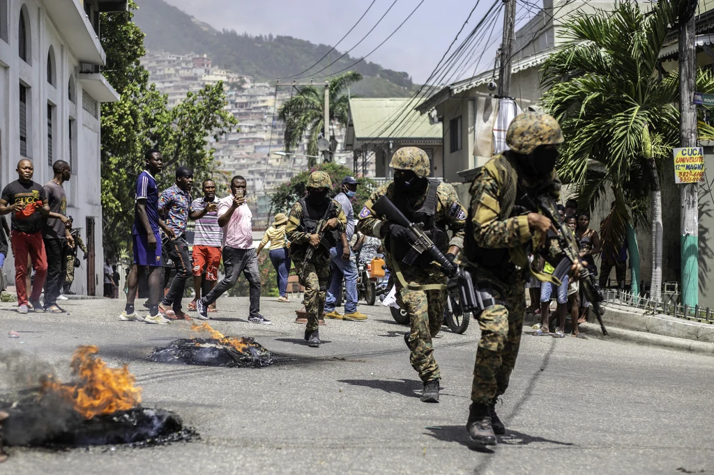

- First, I looked online for information about gang violence in Haiti to have a good understanding of my topic.
- I then created a google doc with notes/info about gang violence in Haiti.
- I thought of 4 topic areas (overview, cause, wellbeing, help/management strategy) and asked AI to summarise each of these topics in relation to gang violence in Haiti.
- I then looked at the sources that AI provided to gather more accurate information from credible sources.
- Finally, I created this website with the information I had gathered from those sources.
Harvard references below, all image references are above the image:
Binuh & UNICEF joint statement 2025a, Unicef.org, viewed 23 August 2026, <https://www.unicef.org/haiti/en/press-releases/binuh-unicef-joint-statement>.
Center for Preventive Action 2024, Instability in Haiti, Global Conflict Tracker, viewed 23 August 2026, <https://www.cfr.org/global-conflict-tracker/conflict/instability-haiti>.
― 2026b, United Nations : Office on Drugs and Crime, viewed 22 August 2026, <https://www.unodc.org/unodc/frontpage/2026/January/explainer_-organized-crime-and-gang-violence-in-haiti.html>.
Fleck, A 2023, Infographic: Haiti’s escalating gang violence, Statista Infographics, viewed 23 August 2026, <https://www.statista.com/chart/29965/un-data-on-haiti-crisis/>.
Haiti appeal n.d., www.unicef.org, viewed 23 August 2026, <https://www.unicef.org/appeals/haiti>.
Haiti, caught between political paralysis and escalating violence 2024, Global Initiative, viewed 23 August 2026, <https://globalinitiative.net/analysis/haiti-caught-between-political-paralysis-and-escalating-violence/>.
Hassan, T 2024, World report 2025: Rights trends in Haiti, Human Rights Watch, viewed 23 August 2026, <https://www.hrw.org/world-report/2025/country-chapters/haiti>.
Launch of the 2026 humanitarian response plan in Haiti to assist 4.2 million people 2026a, Haiti, viewed 23 August 2026, <https://haiti.un.org/en/307360-launch-2026-humanitarian-response-plan-haiti-assist-42-million-people>.
Snapshot of key results for 2025 2025b, Unicef.org, viewed 23 August 2026, <https://www.unicef.org/haiti/en/reports/snapshot-key-results-2025>.
UN Geneva Press briefing - 05 june 2026 2026b, UN Transcripts, United Nations, viewed 23 August 2026, <https://transcripts.un.org/en/briefing/geneva/2026-06-05>.
unicef n.d., Crisis in Haiti | UNICEF, www.unicef.org, viewed 23 August 2026, <https://www.unicef.org/emergencies/crisis-haiti>.
United Nations Development Programme 2024, Human development index, United Nations Development Programme, United Nations, viewed 22 August 2026, <https://hdr.undp.org/data-center/human-development-index#/indicies/HDI>.
(pdf, can't be harvard referenced): https://www.un.org/sexualviolenceinconflict/wp-content/uploads/2026/04/report/united-nations-integrated-office-in-haiti-report-of-the-secretary-general/8788fc76-904c-49e0-abe6-6bab89bcf2de.pdf?
(pdf, can't be harvard referenced): https://digitallibrary.un.org/record/4099435/files/S_2026_31-EN.pdf?
Center for Preventive Action 2024, Instability in Haiti, Global Conflict Tracker, viewed 23 August 2026, <https://www.cfr.org/global-conflict-tracker/conflict/instability-haiti>.
― 2026b, United Nations : Office on Drugs and Crime, viewed 22 August 2026, <https://www.unodc.org/unodc/frontpage/2026/January/explainer_-organized-crime-and-gang-violence-in-haiti.html>.
Fleck, A 2023, Infographic: Haiti’s escalating gang violence, Statista Infographics, viewed 23 August 2026, <https://www.statista.com/chart/29965/un-data-on-haiti-crisis/>.
Haiti appeal n.d., www.unicef.org, viewed 23 August 2026, <https://www.unicef.org/appeals/haiti>.
Haiti, caught between political paralysis and escalating violence 2024, Global Initiative, viewed 23 August 2026, <https://globalinitiative.net/analysis/haiti-caught-between-political-paralysis-and-escalating-violence/>.
Hassan, T 2024, World report 2025: Rights trends in Haiti, Human Rights Watch, viewed 23 August 2026, <https://www.hrw.org/world-report/2025/country-chapters/haiti>.
Launch of the 2026 humanitarian response plan in Haiti to assist 4.2 million people 2026a, Haiti, viewed 23 August 2026, <https://haiti.un.org/en/307360-launch-2026-humanitarian-response-plan-haiti-assist-42-million-people>.
Snapshot of key results for 2025 2025b, Unicef.org, viewed 23 August 2026, <https://www.unicef.org/haiti/en/reports/snapshot-key-results-2025>.
UN Geneva Press briefing - 05 june 2026 2026b, UN Transcripts, United Nations, viewed 23 August 2026, <https://transcripts.un.org/en/briefing/geneva/2026-06-05>.
unicef n.d., Crisis in Haiti | UNICEF, www.unicef.org, viewed 23 August 2026, <https://www.unicef.org/emergencies/crisis-haiti>.
United Nations Development Programme 2024, Human development index, United Nations Development Programme, United Nations, viewed 22 August 2026, <https://hdr.undp.org/data-center/human-development-index#/indicies/HDI>.
(pdf, can't be harvard referenced): https://www.un.org/sexualviolenceinconflict/wp-content/uploads/2026/04/report/united-nations-integrated-office-in-haiti-report-of-the-secretary-general/8788fc76-904c-49e0-abe6-6bab89bcf2de.pdf?
(pdf, can't be harvard referenced): https://digitallibrary.un.org/record/4099435/files/S_2026_31-EN.pdf?
Center for Preventive Action 2024, Instability in Haiti, Global Conflict Tracker, viewed 23 August 2026, <https://www.cfr.org/global-conflict-tracker/conflict/instability-haiti>.
